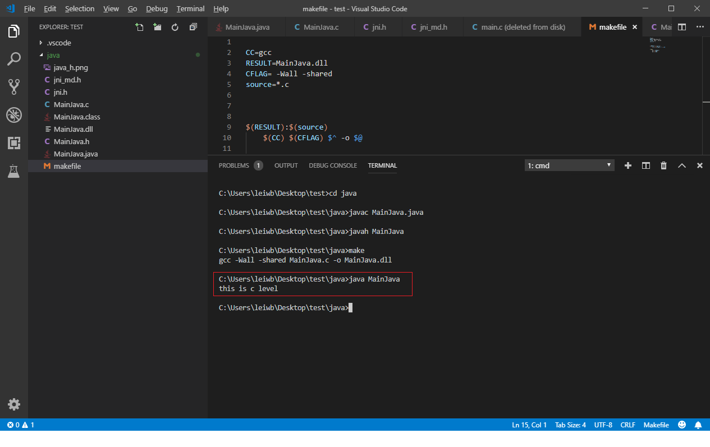

<!DOCTYPE html>
<html lang="zh">
<head><meta name="generator" content="Hexo 3.8.0">
    <meta charset="utf-8">
    
    <title>android NDK | QK</title>
    
    
        <meta name="keywords" content="NDK">
    
    <meta name="viewport" content="width=device-width, initial-scale=1, maximum-scale=1">
    <meta name="description" content="最近维护了公司的一个JNI项目，面向java/android平台使用，有幸接触了Java/Android 平台与c/c++ 的交互使用。  Java 与 c/c++ 交互使用 dll 形式 Android 与c/C++ 交互使用.so文件格式  预备知识JNI 基础概念 JNI 编程基础 android.mk 编写 假使我认为您已经能够使用c/c++ 编程，基本能够使用android studio">
<meta name="keywords" content="NDK">
<meta property="og:type" content="article">
<meta property="og:title" content="android NDK">
<meta property="og:url" content="http://yoursite.com/2018/12/05/android-NDK/index.html">
<meta property="og:site_name" content="QK">
<meta property="og:description" content="最近维护了公司的一个JNI项目，面向java/android平台使用，有幸接触了Java/Android 平台与c/c++ 的交互使用。  Java 与 c/c++ 交互使用 dll 形式 Android 与c/C++ 交互使用.so文件格式  预备知识JNI 基础概念 JNI 编程基础 android.mk 编写 假使我认为您已经能够使用c/c++ 编程，基本能够使用android studio">
<meta property="og:locale" content="zh-CN">
<meta property="og:image" content="http://yoursite.com/2018/12/05/android-NDK/java_h.png">
<meta property="og:image" content="http://yoursite.com/2018/12/05/android-NDK/android_h.png">
<meta property="og:image" content="http://yoursite.com/2018/12/05/android-NDK/android_so.png">
<meta property="og:updated_time" content="2019-02-17T03:57:51.857Z">
<meta name="twitter:card" content="summary">
<meta name="twitter:title" content="android NDK">
<meta name="twitter:description" content="最近维护了公司的一个JNI项目，面向java/android平台使用，有幸接触了Java/Android 平台与c/c++ 的交互使用。  Java 与 c/c++ 交互使用 dll 形式 Android 与c/C++ 交互使用.so文件格式  预备知识JNI 基础概念 JNI 编程基础 android.mk 编写 假使我认为您已经能够使用c/c++ 编程，基本能够使用android studio">
<meta name="twitter:image" content="http://yoursite.com/2018/12/05/android-NDK/java_h.png">
    

    

    
        <link rel="icon" href="../../../../favicon.ico">
    

    <link rel="stylesheet" href="../../../../libs/font-awesome/css/font-awesome.min.css">
    <link rel="stylesheet" href="../../../../libs/open-sans/styles.css">
    <link rel="stylesheet" href="../../../../libs/source-code-pro/styles.css">

    <link rel="stylesheet" href="../../../../css/style.css">
    <script src="../../../../libs/jquery/2.1.3/jquery.min.js"></script>
    <script src="../../../../libs/jquery/plugins/cookie/1.4.1/jquery.cookie.js"></script>
    
    
        <link rel="stylesheet" href="../../../../libs/lightgallery/css/lightgallery.min.css">
    
    
        <link rel="stylesheet" href="../../../../libs/justified-gallery/justifiedGallery.min.css">
    
    
    
    


    
</head>
</html>
<body>
    <div id="container">
        <header id="header">
    <div id="header-main" class="header-inner">
        <div class="outer">
            <a href="../../../../index.html" id="logo">
                <i class="logo"></i>
                <span class="site-title">QK</span>
            </a>
            <nav id="main-nav">
                
                    <a class="main-nav-link" href="../../../../index.html">首页</a>
                
                    <a class="main-nav-link" href="../../../../about">关于</a>
                
            </nav>
            
            <div id="search-form-wrap">

    <form class="search-form">
        <input type="text" class="ins-search-input search-form-input" placeholder="搜索">
        <button type="submit" class="search-form-submit"></button>
    </form>
    <div class="ins-search">
    <div class="ins-search-mask"></div>
    <div class="ins-search-container">
        <div class="ins-input-wrapper">
            <input type="text" class="ins-search-input" placeholder="想要查找什么...">
            <span class="ins-close ins-selectable"><i class="fa fa-times-circle"></i></span>
        </div>
        <div class="ins-section-wrapper">
            <div class="ins-section-container"></div>
        </div>
    </div>
</div>
<script>
(function (window) {
    var INSIGHT_CONFIG = {
        TRANSLATION: {
            POSTS: '文章',
            PAGES: '页面',
            CATEGORIES: '分类',
            TAGS: '标签',
            UNTITLED: '(未命名)',
        },
        ROOT_URL: '/',
        CONTENT_URL: '../../../../content.json',
    };
    window.INSIGHT_CONFIG = INSIGHT_CONFIG;
})(window);
</script>
<script src="../../../../js/insight.js"></script>

</div>
        </div>
    </div>
    <div id="main-nav-mobile" class="header-sub header-inner">
        <table class="menu outer">
            <tr>
                
                    <td><a class="main-nav-link" href="../../../../index.html">首页</a></td>
                
                    <td><a class="main-nav-link" href="../../../../about">关于</a></td>
                
                <td>
                    
    <div class="search-form">
        <input type="text" class="ins-search-input search-form-input" placeholder="搜索">
    </div>

                </td>
            </tr>
        </table>
    </div>
</header>

        <div class="outer">
            
            
                <aside id="sidebar">
   
        
    <div class="widget-wrap" id="categories">
        <h3 class="widget-title">
            <span>分类</span>
            &nbsp;
            <a id="allExpand" href="#">
                <i class="fa fa-angle-double-down fa-2x"></i>
            </a>
        </h3>
        
        
        
         <ul class="unstyled" id="tree"> 
                    <li class="directory">
                        <a href="#" data-role="directory">
                            <i class="fa fa-folder"></i>
                            &nbsp;
                            Leetcode
                        </a>
                         <ul class="unstyled" id="tree">  <li class="file"><a href="../../10/task-shchedule-weight/">求二叉树的路径和(path sum)</a></li>  </ul> 
                    </li> 
                    
                    <li class="directory">
                        <a href="#" data-role="directory">
                            <i class="fa fa-folder"></i>
                            &nbsp;
                            network
                        </a>
                         <ul class="unstyled" id="tree">  <li class="file"><a href="../../../11/15/TCP-transport-institution/">TCP 传输机制</a></li>  <li class="file"><a href="../../../11/13/TCP-IP-demultipexing-multiplexing/">复路分解与多复路</a></li>  <li class="file"><a href="../../09/router-data-plane/">路由器数据层</a></li>  </ul> 
                    </li> 
                    
                    <li class="directory">
                        <a href="#" data-role="directory">
                            <i class="fa fa-folder"></i>
                            &nbsp;
                            个人生活
                        </a>
                         <ul class="unstyled" id="tree">  <li class="file"><a href="../../../../2019/02/25/life-record2/">生活小记2</a></li>  <li class="file"><a href="../../../../2019/02/16/life_record1/">生活小记</a></li>  </ul> 
                    </li> 
                    
                    <li class="directory open">
                        <a href="#" data-role="directory">
                            <i class="fa fa-folder-open"></i>
                            &nbsp;
                            编程语言
                        </a>
                         <ul class="unstyled" id="tree"> 
                    <li class="directory open">
                        <a href="#" data-role="directory">
                            <i class="fa fa-folder-open"></i>
                            &nbsp;
                            android
                        </a>
                         <ul class="unstyled" id="tree">  <li class="file active"><a href="">android NDK</a></li>  </ul> 
                    </li> 
                    
                    <li class="directory">
                        <a href="#" data-role="directory">
                            <i class="fa fa-folder"></i>
                            &nbsp;
                            cpp
                        </a>
                         <ul class="unstyled" id="tree">  <li class="file"><a href="../../../../2019/03/04/cpp缓冲与流对象/">cpp缓冲与流对象</a></li>  <li class="file"><a href="../../../../2019/03/12/CPPTopologicOrder/">拓扑排序</a></li>  <li class="file"><a href="../../../../2019/03/05/cpp11线程/">cpp11线程</a></li>  </ul> 
                    </li> 
                    
                    <li class="directory">
                        <a href="#" data-role="directory">
                            <i class="fa fa-folder"></i>
                            &nbsp;
                            go
                        </a>
                         <ul class="unstyled" id="tree">  <li class="file"><a href="../../../../2019/02/22/GoTree/">数据类型<平衡树></平衡树></a></li>  <li class="file"><a href="../../../../2019/03/01/goAndCpp/">数据类型 <数组&切片&结构体></数组&切片&结构体></a></li>  <li class="file"><a href="../../../../2019/03/01/goDataMap/">数据类型<map></map></a></li>  <li class="file"><a href="../../../../2019/02/17/goGoroutine/">概述（2）</a></li>  <li class="file"><a href="../../../../2019/02/17/gonovice/">概述（1）</a></li>  <li class="file"><a href="../../../../2019/03/03/goWeb/">GoWeb <1></1></a></li>  </ul> 
                    </li> 
                     </ul> 
                    </li> 
                     <li class="file"><a href="../../../../2019/03/02/个人博客简介/">个人博客简介</a></li>  </ul> 
    </div>
    <script>
        $(document).ready(function() {
            var iconFolderOpenClass  = 'fa-folder-open';
            var iconFolderCloseClass = 'fa-folder';
            var iconAllExpandClass = 'fa-angle-double-down';
            var iconAllPackClass = 'fa-angle-double-up';
            // Handle directory-tree expansion:
            // 左键单独展开目录
            $(document).on('click', '#categories a[data-role="directory"]', function (event) {
                event.preventDefault();

                var icon = $(this).children('.fa');
                var expanded = icon.hasClass(iconFolderOpenClass);
                var subtree = $(this).siblings('ul');
                icon.removeClass(iconFolderOpenClass).removeClass(iconFolderCloseClass);
                if (expanded) {
                    if (typeof subtree != 'undefined') {
                        subtree.slideUp({ duration: 100 });
                    }
                    icon.addClass(iconFolderCloseClass);
                } else {
                    if (typeof subtree != 'undefined') {
                        subtree.slideDown({ duration: 100 });
                    }
                    icon.addClass(iconFolderOpenClass);
                }
            });
            // 右键展开下属所有目录
            $('#categories a[data-role="directory"]').bind("contextmenu", function(event){
                event.preventDefault();
                
                var icon = $(this).children('.fa');
                var expanded = icon.hasClass(iconFolderOpenClass);
                var listNode = $(this).siblings('ul');
                var subtrees = $.merge(listNode.find('li ul'), listNode);
                var icons = $.merge(listNode.find('.fa'), icon);
                icons.removeClass(iconFolderOpenClass).removeClass(iconFolderCloseClass);
                if(expanded) {
                    subtrees.slideUp({ duration: 100 });
                    icons.addClass(iconFolderCloseClass);
                } else {
                    subtrees.slideDown({ duration: 100 });
                    icons.addClass(iconFolderOpenClass);
                }
            })
            // 展开关闭所有目录按钮
            $(document).on('click', '#allExpand', function (event) {
                event.preventDefault();
                
                var icon = $(this).children('.fa');
                var expanded = icon.hasClass(iconAllExpandClass);
                icon.removeClass(iconAllExpandClass).removeClass(iconAllPackClass);
                if(expanded) {
                    $('#sidebar .fa.fa-folder').removeClass('fa-folder').addClass('fa-folder-open')
                    $('#categories li ul').slideDown({ duration: 100 });
                    icon.addClass(iconAllPackClass);
                } else {
                    $('#sidebar .fa.fa-folder-open').removeClass('fa-folder-open').addClass('fa-folder')
                    $('#categories li ul').slideUp({ duration: 100 });
                    icon.addClass(iconAllExpandClass);
                }
            });  
        });
    </script>

    
    <div id="toTop" class="fa fa-angle-up"></div>
</aside>
            
            <section id="main"><article id="post-android-NDK" class="article article-type-post" itemscope="" itemprop="blogPost">
    <div class="article-inner">
        
        
            <header class="article-header">
                
                    <div class="article-meta">
                        
    <div class="article-category">
    	<i class="fa fa-folder"></i>
        <a class="article-category-link" href="../../../../categories/编程语言/">编程语言</a><i class="fa fa-angle-right"></i><a class="article-category-link" href="../../../../categories/编程语言/android/">android</a>
    </div>

                        
    <div class="article-tag">
        <i class="fa fa-tag"></i>
        <a class="tag-link" href="../../../../tags/NDK/">NDK</a>
    </div>

                        
    <div class="article-date">
        <i class="fa fa-calendar"></i>
        <a href="">
            <time datetime="2018-12-05T08:59:50.000Z" itemprop="datePublished">2018-12-05</time>
        </a>
    </div>


                        
                        
                    </div>
                
                
    
        <h1 class="article-title" itemprop="name">
            android NDK
        </h1>
    

            </header>
        
        
        <div class="article-entry" itemprop="articleBody">
        
        
            
        
        
            <p>最近维护了公司的一个JNI项目，面向java/android平台使用，有幸接触了Java/Android 平台与c/c++ 的交互使用。</p>
<ul>
<li>Java 与 c/c++ 交互使用 dll 形式</li>
<li>Android 与c/C++ 交互使用.so文件格式</li>
</ul>
<h2 id="预备知识"><a href="#预备知识" class="headerlink" title="预备知识"></a>预备知识</h2><p><a href="https://baike.baidu.com/item/JNI/9412164?fr=aladdin" target="_blank">JNI 基础概念</a></p>
<p><a href="https://www3.ntu.edu.sg/home/ehchua/programming/java/JavaNativeInterface.html" target="_blank">JNI 编程基础</a></p>
<p><a href="https://developer.android.com/ndk/guides/android_mk?hl=zh-cn" target="_blank">android.mk 编写</a></p>
<p>假使我认为您已经能够使用c/c++ 编程，基本能够使用android studio的使用，不使用亦可以</p>
<h2 id="Java-使用dll"><a href="#Java-使用dll" class="headerlink" title="Java 使用dll"></a>Java 使用dll</h2><h3 id="c语言头文件生成"><a href="#c语言头文件生成" class="headerlink" title="c语言头文件生成"></a>c语言头文件生成</h3><ul>
<li>使用javac javaName.java 生成.class 文件</li>
<li>使用javah javaName 生成 .h 头文件</li>
</ul>
<p><strong>note:</strong> 倘如您的java中有包名，那么退回到包名的根目录，使用以下形式的命令</p>
<ul>
<li>javac com\application\javaName.java  生成.class 文件</li>
<li>avah com.application.javaName 生成 .h 头文件</li>
</ul>
<p>如下图<br></p>
<p>本实验的代码：</p>
<ul>
<li><p>jni_md.h /jni.h 文件在安装的JDK进行提供</p>
</li>
<li><p>MainJava.java</p>
</li>
</ul>
<figure class="highlight java"><table><tr><td class="gutter"><pre><span class="line">1</span><br><span class="line">2</span><br><span class="line">3</span><br><span class="line">4</span><br><span class="line">5</span><br><span class="line">6</span><br><span class="line">7</span><br><span class="line">8</span><br><span class="line">9</span><br><span class="line">10</span><br></pre></td><td class="code"><pre><span class="line">    <span class="keyword">public</span> <span class="class"><span class="keyword">class</span> <span class="title">MainJava</span> </span>&#123;</span><br><span class="line"></span><br><span class="line">    <span class="keyword">static</span>&#123;</span><br><span class="line">        System.loadLibrary(<span class="string">"MainJava"</span>);</span><br><span class="line">    &#125;</span><br><span class="line">    <span class="function"><span class="keyword">public</span> <span class="keyword">native</span> String <span class="title">printTest</span><span class="params">()</span></span>;</span><br><span class="line">    <span class="function"><span class="keyword">public</span> <span class="keyword">static</span> <span class="keyword">void</span> <span class="title">main</span><span class="params">(String[] args)</span> </span>&#123;</span><br><span class="line">        System.out.println(<span class="keyword">new</span> MainJava().printTest());</span><br><span class="line">    &#125;</span><br><span class="line">&#125;</span><br></pre></td></tr></table></figure>
<ul>
<li>MainJava.h</li>
</ul>
<figure class="highlight c"><table><tr><td class="gutter"><pre><span class="line">1</span><br><span class="line">2</span><br><span class="line">3</span><br><span class="line">4</span><br><span class="line">5</span><br><span class="line">6</span><br><span class="line">7</span><br><span class="line">8</span><br><span class="line">9</span><br><span class="line">10</span><br><span class="line">11</span><br><span class="line">12</span><br><span class="line">13</span><br><span class="line">14</span><br><span class="line">15</span><br><span class="line">16</span><br><span class="line">17</span><br><span class="line">18</span><br><span class="line">19</span><br><span class="line">20</span><br><span class="line">21</span><br></pre></td><td class="code"><pre><span class="line"><span class="comment">/* DO NOT EDIT THIS FILE - it is machine generated */</span></span><br><span class="line"><span class="meta">#<span class="meta-keyword">include</span> <span class="meta-string">"jni.h"</span></span></span><br><span class="line"><span class="comment">/* Header for class MainJava */</span></span><br><span class="line"></span><br><span class="line"><span class="meta">#<span class="meta-keyword">ifndef</span> _Included_MainJava</span></span><br><span class="line"><span class="meta">#<span class="meta-keyword">define</span> _Included_MainJava</span></span><br><span class="line"><span class="meta">#<span class="meta-keyword">ifdef</span> __cplusplus</span></span><br><span class="line"><span class="keyword">extern</span> <span class="string">"C"</span> &#123;</span><br><span class="line"><span class="meta">#<span class="meta-keyword">endif</span></span></span><br><span class="line"><span class="comment">/*</span></span><br><span class="line"><span class="comment">* Class:     MainJava</span></span><br><span class="line"><span class="comment">* Method:    printTest</span></span><br><span class="line"><span class="comment">* Signature: ()Ljava/lang/String;</span></span><br><span class="line"><span class="comment">*/</span></span><br><span class="line">JNIEXPORT jstring JNICALL Java_MainJava_printTest</span><br><span class="line">(JNIEnv *, jobject);</span><br><span class="line"></span><br><span class="line"><span class="meta">#<span class="meta-keyword">ifdef</span> __cplusplus</span></span><br><span class="line">&#125;</span><br><span class="line"><span class="meta">#<span class="meta-keyword">endif</span></span></span><br><span class="line"><span class="meta">#<span class="meta-keyword">endif</span></span></span><br></pre></td></tr></table></figure>
<ul>
<li>MainJava.c</li>
</ul>
<figure class="highlight c"><table><tr><td class="gutter"><pre><span class="line">1</span><br><span class="line">2</span><br><span class="line">3</span><br><span class="line">4</span><br><span class="line">5</span><br></pre></td><td class="code"><pre><span class="line">    <span class="meta">#<span class="meta-keyword">include</span><span class="meta-string">"MainJava.h"</span></span></span><br><span class="line">JNIEXPORT jstring JNICALL Java_MainJava_printTest</span><br><span class="line">  (JNIEnv *env, jobject thisobj)&#123;</span><br><span class="line">      <span class="keyword">return</span> (*env)-&gt;NewStringUTF(env,<span class="string">"this is c level"</span>);</span><br><span class="line">  &#125;</span><br></pre></td></tr></table></figure>
<ul>
<li>makefile</li>
</ul>
<figure class="highlight makefile"><table><tr><td class="gutter"><pre><span class="line">1</span><br><span class="line">2</span><br><span class="line">3</span><br><span class="line">4</span><br><span class="line">5</span><br><span class="line">6</span><br><span class="line">7</span><br><span class="line">8</span><br><span class="line">9</span><br><span class="line">10</span><br></pre></td><td class="code"><pre><span class="line">CC=gcc</span><br><span class="line">RESULT=MainJava.dll</span><br><span class="line">CFLAG= -Wall -shared</span><br><span class="line">source=*.c</span><br><span class="line"></span><br><span class="line"><span class="variable">$(RESULT)</span>:<span class="variable">$(source)</span></span><br><span class="line">    <span class="variable">$(CC)</span> <span class="variable">$(CFLAG)</span> <span class="variable">$^</span> -o <span class="variable">$@</span></span><br><span class="line"></span><br><span class="line"><span class="section">clean:</span></span><br><span class="line">    del <span class="variable">$(RESULT)</span></span><br></pre></td></tr></table></figure>
<h2 id="Android使用-so-文件"><a href="#Android使用-so-文件" class="headerlink" title="Android使用 .so 文件"></a>Android使用 .so 文件</h2><p>生成 .so文件可以使用android studio中的内置的NDK-build ，也可以选择手动生成，我这里使用手动生成。<a href="https://developer.android.google.cn/ndk/downloads/" target="_blank">NDK-build下载</a></p>
<ul>
<li>需要将javac/javah 生成的 .h /.c /android.mk application.mk 文件放入jni 文件夹中，然后在此目录中运行ndk-build 命令</li>
</ul>
<p>如下图<br></p>
<ul>
<li>将生成的libs 拷贝到android 项目中的app/libs下面</li>
<li>在app/build.gradle中加入</li>
</ul>
<figure class="highlight java"><table><tr><td class="gutter"><pre><span class="line">1</span><br><span class="line">2</span><br><span class="line">3</span><br><span class="line">4</span><br><span class="line">5</span><br><span class="line">6</span><br></pre></td><td class="code"><pre><span class="line">.....</span><br><span class="line">sourceSets&#123;</span><br><span class="line">    main&#123;</span><br><span class="line">        jniLibs.srcDirs=[<span class="string">'libs'</span>]</span><br><span class="line">    &#125;</span><br><span class="line">&#125;</span><br></pre></td></tr></table></figure>
<p>效果如下<br></p>
<h2 id="后语"><a href="#后语" class="headerlink" title="后语"></a>后语</h2><p>对于一些使用底层代码使用c/c++的程序，常常使用这种方式，移植到其他平台上，android/java 作为业务层呈现</p>

            </div>
        
        <footer class="article-footer">
        </footer>
    </div>
</article>


    
<nav id="article-nav">
    
        <a href="../../09/router-data-plane/" id="article-nav-newer" class="article-nav-link-wrap">
            <strong class="article-nav-caption">上一篇</strong>
            <div class="article-nav-title">
                
                    路由器数据层
                
            </div>
        </a>
    
    
        <a href="../../../11/15/TCP-transport-institution/" id="article-nav-older" class="article-nav-link-wrap">
            <strong class="article-nav-caption">下一篇</strong>
            <div class="article-nav-title">TCP 传输机制</div>
        </a>
    
</nav>


    
    


<!-- baidu url auto push script -->
<script type="text/javascript">
    !function(){var e=/([http|https]:\/\/[a-zA-Z0-9\_\.]+\.baidu\.com)/gi,r=window.location.href,o=document.referrer;if(!e.test(r)){var n="//api.share.baidu.com/s.gif";o?(n+="?r="+encodeURIComponent(document.referrer),r&&(n+="&l="+r)):r&&(n+="?l="+r);var t=new Image;t.src=n}}(window);
</script>     
</section>
        </div>
        <footer id="footer">
    <div class="outer">
        <div id="footer-info" class="inner">
            lwb &copy; 2019 
            <a rel="license" href="http://creativecommons.org/licenses/by-nc-nd/4.0/"></a>
            <br> Powered by <a href="http://hexo.io/" target="_blank">Hexo</a>. Theme - <a href="https://github.com/zthxxx/hexo-theme-Wikitten">wikitten</a>
            
        </div>
    </div>
</footer>

        

    
        <script src="../../../../libs/lightgallery/js/lightgallery.min.js"></script>
        <script src="../../../../libs/lightgallery/js/lg-thumbnail.min.js"></script>
        <script src="../../../../libs/lightgallery/js/lg-pager.min.js"></script>
        <script src="../../../../libs/lightgallery/js/lg-autoplay.min.js"></script>
        <script src="../../../../libs/lightgallery/js/lg-fullscreen.min.js"></script>
        <script src="../../../../libs/lightgallery/js/lg-zoom.min.js"></script>
        <script src="../../../../libs/lightgallery/js/lg-hash.min.js"></script>
        <script src="../../../../libs/lightgallery/js/lg-share.min.js"></script>
        <script src="../../../../libs/lightgallery/js/lg-video.min.js"></script>
    
    
        <script src="../../../../libs/justified-gallery/jquery.justifiedGallery.min.js"></script>
    
    
        <script type="text/x-mathjax-config">
    MathJax.Hub.Config({
        tex2jax: {
            inlineMath: [ ["$","$"], ["\\(","\\)"] ],
            skipTags: ['script', 'noscript', 'style', 'textarea', 'pre', 'code'],
            processEscapes: true,
            TeX: {
                equationNumbers: {
                  autoNumber: 'AMS'
                }
            }
        }
    });
    MathJax.Hub.Queue(function() {
        var all = MathJax.Hub.getAllJax();
        for (var i = 0; i < all.length; ++i)
            all[i].SourceElement().parentNode.className += ' has-jax';
    });
</script>
<script async src="//cdnjs.cloudflare.com/ajax/libs/mathjax/2.7.1/MathJax.js?config=TeX-AMS-MML_HTMLorMML"></script>
    


<!-- Custom Scripts -->
<script src="../../../../js/main.js"></script>

    </div>
</body>
</html>